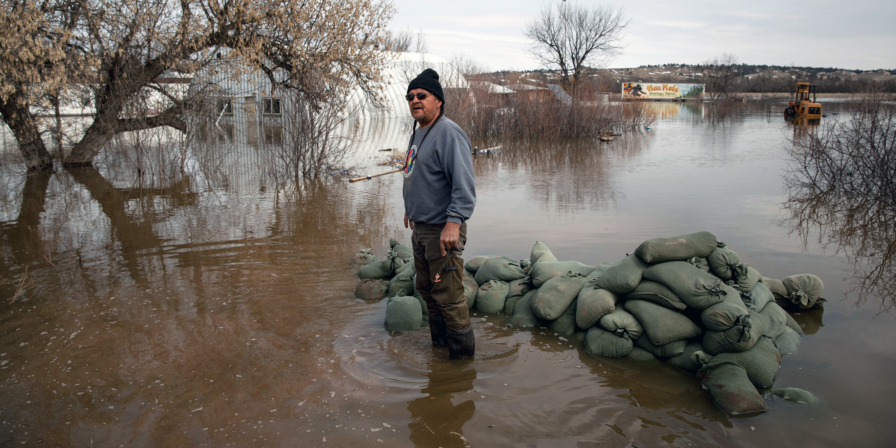
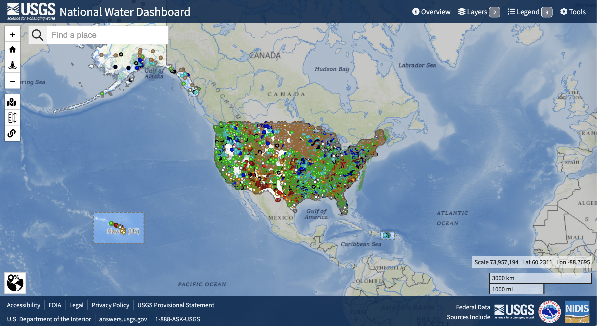
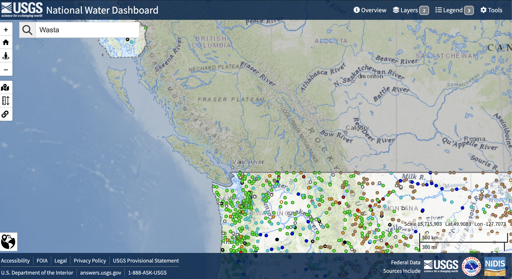
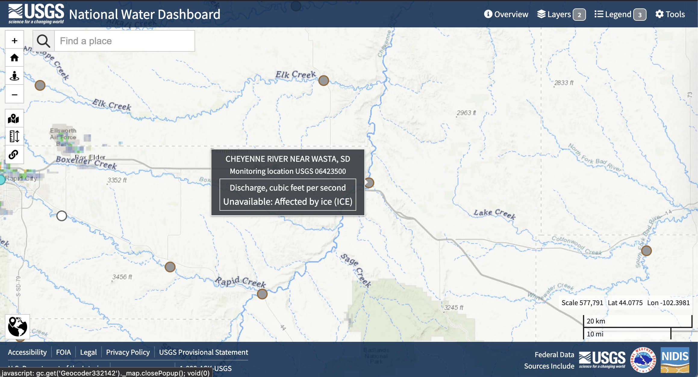
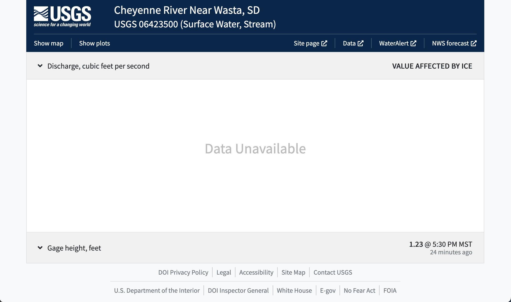
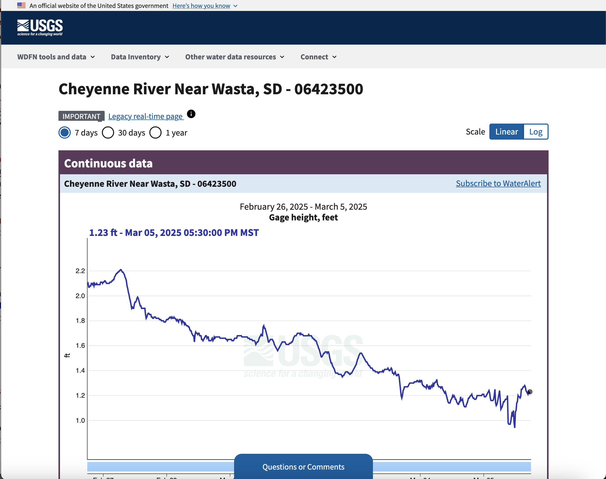
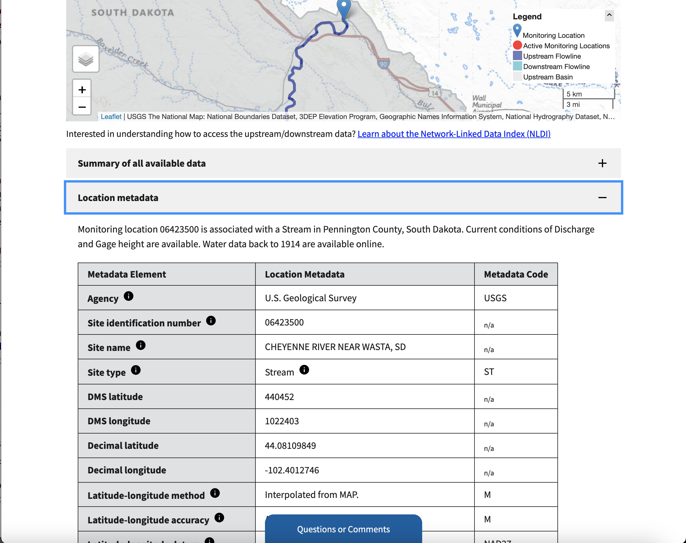
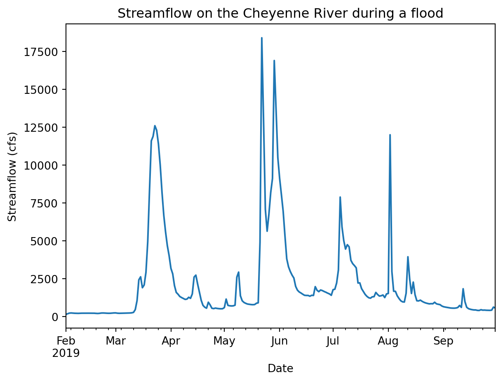
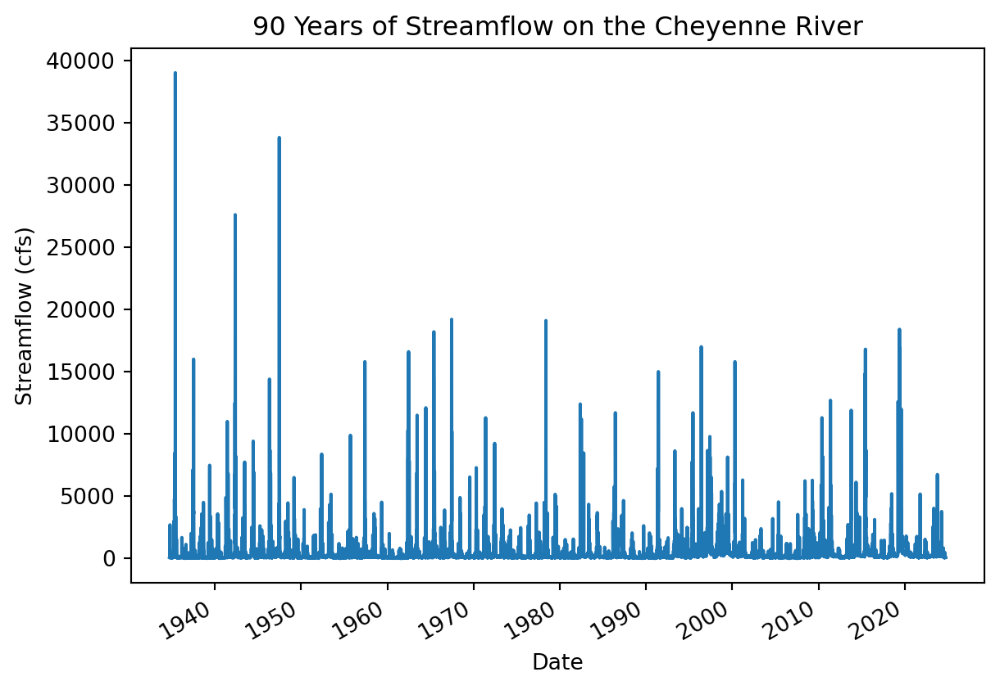
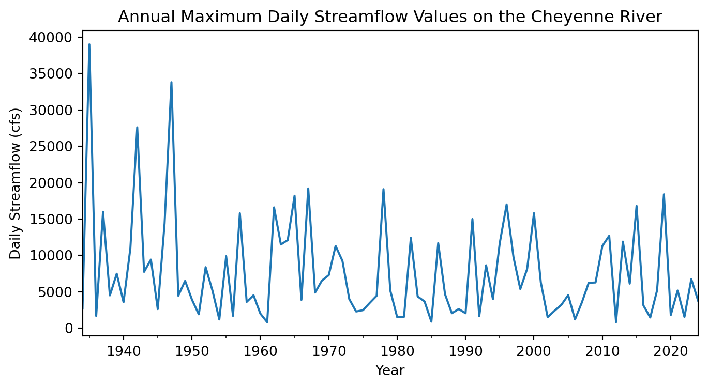

id = 'stars'
site_name = 'Cheyenne River near Wasta'
year = 2019
project_title = 'Cheyenne River Flood Frequency'
project_dirname = 'flood-cheyenne'The Midwest underwater
A look at 2019 floods in South Dakota, USA
In March 2019, large parts of South Dakota were flooded for weeks. What happened to cause this flooding? What were the impacts on local communities? We will use environmental data to determine where and when flooding happened and how long it lasted. Then, we’ll use that same data to put the floods in context historically and discuss how to plan for future disasters.


Read More
Check out what some US government and news sources said about the floods in 2019. Here are some resources from different sources to get you started:
If you know someone who lived through these or similar floods, we also invite you to ask them about that experience.
Reflect and Respond
Based on your reading and conversations, what do you think some of the causes of the 2019 flooding in South Dakota were?
We like to keep important values up at the top of the notebook – it makes them easy to modify. You can use the following cell to change parameters about your workflow if you like:
Access streamflow data
One way to express how big a flood is by estimating how often larger floods occur. For example, you might have heard news media talking about a “100-year flood”.
In this notebook, you will write Python code to download and work with a time series of streamflow data during the flooding on the Cheyenne River.
Tip
A time series of data is taken at the same location but collected regularly or semi-regularly over time.
You will then use the data to assess when the flooding was at it’s worst.
As an extra challenge you could consider how the values compared to other years by computing the flood’s return period.
Tip
A return period is an estimate of how often you might expect to see a flood of at least a particular size. This does NOT mean an extreme flood “has” to occur within the return period, or that it couldn’t occur more than once. However, it does allow us to assess the probability that a sequence of floods would happen and evaluate whether or not we need to change forecasting tools or engineering standards to meet a new reality. For example, it would be really unusual to get three 100-year floods in a ten year period without some kind of underlying change in the climate.
Read More
Here are some resources from your text book you can review to learn more:
Reflect and Respond
Explain what data you will need to complete this analysis, including:
- What type or types of data do you need?
- How many years of data do you think you need to compute the return period of an extreme event like the 2019 Cheyenne River near Wasta floods?
STEP 0: Get set up to use Python
Use the cell below to add necessary package imports to this notebook. It’s best to import everything in your very first code cell because it helps folks who are reading your code to figure out where everything comes from (mostly right now this is you in the future). It’s very frustrating to try to figure out what packages need to be installed to get some code to run.
Note
Our friend the PEP-8 style guide has some things to say about imports. In particular, your imports should be in alphabetical order.
Try It
In the sample code below, we’ve imported a library needed for working with tabular, or spreadsheet, data, as well as our own library for common Environmental Data Analytics tasks (in this case, managing files on your computer). You will also need to:
- Add the library for working with vector data in Python and a library for creating interactive plots of vector and time-series data to the imports.
- Check that your imports follow the PEP-8 guidelines – they should be in alphabetical order.
- Run your import cell to make sure everything will work
# Import libraries
import earthpy
import pandas as pdSee our solution!
# Import libraries
import earthpy
import geopandas as gpd # Vector data
import hvplot.pandas # Interactive plots
import pandas as pdFinally, we have arranged some sample data for you, which you can download using the earthpy library. Later on, you’ll learn how to download data from the NWIS using the dataretrieval library. For now, you can use the sample data downloaded with the earthpy library.
Try It
The following code will download the sample data based on the value of “title”, and store it in the data directory on your computer. It will also save the path to the downloaded data. You can use the project later on to do things like locate data files on the computer or image you’re using to code. You should practice writing descriptive code by:
- Change
'project-folder-name'to a descriptive directory name where you want to store your data. - Change
data_pathto a descriptive variable name - Run the data download cell to make sure everything will work
# Create project directory
project = earthpy.Project(title=project_title, dirname='project-folder-name')
# Download data
data_path = project.get_data()
# Display the project data directory location
project.project_dirSee our solution!
# Create project directory
project = earthpy.Project(title=project_title, dirname=project_dirname)
# Download data
streamflow_path = project.get_data()
# Display the project data directory location
project.project_dirDownloading from https://ndownloader.figshare.com/files/54659369PosixPath('/home/runner/.local/share/earth-analytics/flood-cheyenne')You can use an open science tool called bash or the shell to work with files and get information about your file system. For example, this code will list (ls) the contents of the project directory
!ls "$project.project_dir"cheyenne_streamflow_1934_2024.csv
Try It
Go check to see if you can find the files using some other method!
Warning
Are you working in the cloud, such as on GitHub Codespaces? Be aware that any files you download to a cloud computer will not be saved on the physical computer you are using! They will remain in the cloud. So, you will not be able to see any downloaded files using the File Explorer or Finder on your computer because they aren’t there.
STEP 1: Site Description and Map
In our example analysis, we’ll be focusing on the Cheyenne River, which flows into Lake Oahu by looking at a stream gage near Wasta, SD, USA. After we’ve completed this example analysis, we suggest that you look into another flood – perhaps one that you have a personal connection to.
Site Description
Try It
Describe the Cheyenne River area in a few sentences. You can include:
- Information about the climatology of the area, or typical precipitation and temperature at different months of the year
- The runoff ratio (average annual runoff divided by average annual precipitation)
- Which wildlife and ecosystems exist in the area
- What communities and infrastructure are in the area
Site Map: The Cheyenne River near Wasta
The code below will create an interactive map of the area. But something is wrong - no one defined the latitude and longitude as variables. Try running the code to see what happens when you reference a variable name that doesn’t exist!
Try It
Find the location of the Cheyenne River near Wasta USGS stream gauge using the National Water Information System. This is not the easiest thing to find if you aren’t used to NWIS, so we’ve provided some screenshots of the process below.
Step 1: NWIS Mapper

Step 2: Search

Wasta in the Find a Place boxStep 3: Select gage

Step 4: Open site page

Site page at the top
Step 5: Get coordinates

Location metadata section. Make a note of the decimal latitude and longitude!
Try It
Now, you’re ready to create your site map!
- Define latitude and longitude variables to match the variable names used in the code.
- Rename the variable
gdfwith something descriptive wherever it occurs. - Run and test your cell to make sure everything works.
Looking for an Extra Challenge?
Customize your plot using the hvplot documentation or by asking your favorite AI tool. For example, you could:
- Change the size of your map
- Change the base map images
- Change the color and size of your place marker
- Remove the axis labels for a cleaner map
# Create a GeoDataFrame with the gage location
gdf = gpd.GeoDataFrame(
# Create the geometry from lat/lon
geometry=gpd.points_from_xy([gage_lon], [gage_lat]),
# Coordinate Reference System for lat/lon values
crs="EPSG:4326"
)
# Plot using hvPlot with a basemap
buffer = 0.01
gdf.hvplot.points(
# Use web tile basemap imagery
geo=True, tiles='OpenTopoMap',
# Set approximate bounding box
ylim=(gage_lat-buffer, gage_lat+buffer),
xlim=(gage_lon-buffer, gage_lon+buffer),
)See our solution!
gage_lat = 44.08109849
gage_lon = -102.4012746
# Create a GeoDataFrame with the gage location
gage_gdf = gpd.GeoDataFrame(
# Create the geometry from lat/lon
geometry=gpd.points_from_xy([gage_lon], [gage_lat]),
# Coordinate Reference System for lat/lon values
crs="EPSG:4326"
)
# Plot using hvPlot with a basemap
buffer = 0.01
gage_gdf.hvplot.points(
# Use web tile basemap imagery
geo=True, tiles='EsriImagery',
# Display the gage name
hover_cols=['name'],
# Format streamgage marker
color='red', size=100,
# Set figure size
width=500, height=300,
# Set approximate bounding box
ylim=(gage_lat-buffer, gage_lat+buffer),
xlim=(gage_lon-buffer, gage_lon+buffer),
# Remove axis labels
xaxis=None, yaxis=None
)STEP 2 Data wrangling
Load sample data
You should now have the sample data downloaded, but you still need to open it up so you can use it. First, you’ll need the path to your data.
Try It
- Replace
data_pathwith a descriptive name - Check your data directory for the file name of the streamflow data, and put it in the place of
data-filename-here
data_path = project.project_dir / 'data-filename-here.csv'See our solution!
nwis_path = project.project_dir / 'cheyenne_streamflow_1934_2024.csv'Let’s take a look at the raw data (make sure to replace nwis_path with the name of your variable!):
!head -n 5 $nwis_pathdatetime,site_no,00060_Mean,00060_Mean_cd,00065_Mean,00065_Mean_cd
1934-10-01 00:00:00+00:00,06423500,54.0,A,,
1934-10-02 00:00:00+00:00,06423500,51.0,A,,
1934-10-03 00:00:00+00:00,06423500,51.0,A,,
1934-10-04 00:00:00+00:00,06423500,54.0,A,,
Try It
The cell below imports CSV data like the flood data into Python. A useful method for looking at the datatypes in your pd.DataFrame is the pd.DataFrame.info() method.
- Replace
dataframewith a descriptive name for your DataFrame variable - Run the cell to see the datatypes of each column.
- Try uncommenting lines one by one by deleting the
#at the beginning and running the code again.
What changes? Why do you think those lines are needed?
Tip
In Python, you will see both methods and functions when you want to give the computer some instructions. This is an important and tricky distinction. For right now – functions have all of their arguments/parameters inside the parentheses, as in dataretrieval.nwis.get_discharge_measurements(). For methods, the first argument is always some kind of Python object that is placed before the method. For example, take a look at the next cell for an example of using the pd.DataFrame.info() method.
dataframe = pd.read_csv(
data_path,
#index_col='datetime',
#parse_dates=True)
dataframe.info()See our solution!
nwis_df = pd.read_csv(
nwis_path,
index_col='datetime',
parse_dates=True)
nwis_df.info()<class 'pandas.core.frame.DataFrame'>
DatetimeIndex: 32866 entries, 1934-10-01 00:00:00+00:00 to 2024-09-30 00:00:00+00:00
Data columns (total 5 columns):
# Column Non-Null Count Dtype
--- ------ -------------- -----
0 site_no 32866 non-null int64
1 00060_Mean 32866 non-null float64
2 00060_Mean_cd 32866 non-null object
3 00065_Mean 1592 non-null float64
4 00065_Mean_cd 1592 non-null object
dtypes: float64(2), int64(1), object(2)
memory usage: 1.5+ MB
Reflect and Respond
What column do you think the streamflow, or discharge, measurements are in?
Organize your data descriptively
It’s important to make sure that your code is easy to read. Even if you don’t plan to share it, you will likely need to read code you’ve written in the future!
Try It
Using the code below as a starting point, select the discharge column and rename it to something descriptive:
- Identify the discharge/streamflow column.
- Replace
discharge_column_namewith the discharge column name. - Replace
new_column_namewith a descriptive name. We recommend including the units of the discharge values in the column name as a way to keep track of them.
discharge_df = (
nwis_df
# Select only the discharge column as a DataFrame
[['discharge_column_name']]
# Rename the discharge column
.rename(columns={'discharge_column_name': 'new_column_name'})
)
discharge_dfSee our solution!
discharge_df = (
nwis_df
# Select only the discharge column as a DataFrame
[['00060_Mean']]
# Rename the discharge column
.rename(columns={'00060_Mean': 'streamflow_cfs'})
)
discharge_df| streamflow_cfs | |
|---|---|
| datetime | |
| 1934-10-01 00:00:00+00:00 | 54.0 |
| 1934-10-02 00:00:00+00:00 | 51.0 |
| 1934-10-03 00:00:00+00:00 | 51.0 |
| 1934-10-04 00:00:00+00:00 | 54.0 |
| 1934-10-05 00:00:00+00:00 | 54.0 |
| ... | ... |
| 2024-09-26 00:00:00+00:00 | 103.0 |
| 2024-09-27 00:00:00+00:00 | 94.9 |
| 2024-09-28 00:00:00+00:00 | 90.7 |
| 2024-09-29 00:00:00+00:00 | 83.9 |
| 2024-09-30 00:00:00+00:00 | 73.6 |
32866 rows × 1 columns
Strings
How does a computer tell the difference between a name which is linked to a value, and a string of characters to be interpreted as text (like a column name)?
In most programming languages, we have to put quotes around strings of characters that are meant to be interpreted literally as text rather than symbolically as a variable. In Python, you can use either single ' or double " quotes around strings. If you forget to put quotes around your strings, Python will try to interpret them as variable names instead, and will probably give you a NameError when it can’t find the linked value.
STEP 3: Visualize the flood
Visualizing the data will help make sure that everything is formatted correctly and makes sense. It also helps later on with communicating your results.
Can we see the flood in the streamflow data?
Let’s take a look at the data from February - September, 2019. This should let us see the peak streamflow values and when they occurred.
Try It
Below, you will see an example of how to subset your streamflow data by date.We do this using the .loc attribute of your DataFrame, which is a powerful tool for selecting the rows you want. Because the dates are in the Python datetime64 format, you can select based on the year and month, without needing to type out dates or times!
- Replace
dataframe_namewith your streamflowDataFramename. - Save the result to a descriptive variable name, and call it at the end of the cell for testing.
You can find some examples of subsetting time series data in the textbook.
dataframe_name.loc['2019-02':'2019-09']See our solution!
flood_df = discharge_df.loc['2019-02':'2019-09']
flood_df| streamflow_cfs | |
|---|---|
| datetime | |
| 2019-02-01 00:00:00+00:00 | 147.0 |
| 2019-02-02 00:00:00+00:00 | 192.0 |
| 2019-02-03 00:00:00+00:00 | 233.0 |
| 2019-02-04 00:00:00+00:00 | 244.0 |
| 2019-02-05 00:00:00+00:00 | 234.0 |
| ... | ... |
| 2019-09-26 00:00:00+00:00 | 419.0 |
| 2019-09-27 00:00:00+00:00 | 416.0 |
| 2019-09-28 00:00:00+00:00 | 430.0 |
| 2019-09-29 00:00:00+00:00 | 631.0 |
| 2019-09-30 00:00:00+00:00 | 572.0 |
242 rows × 1 columns
Create a line plot with Python
Next, plot your subsetted data. Don’t forget to label your plot!
Try It
(
dataframe_name
.plot(
xlabel='',
ylabel='',
title='')
)See our solution!
(
flood_df
.plot(
xlabel='Date',
ylabel='Streamflow (cfs)',
title='Streamflow on the Cheyenne River during a flood',
legend=False)
)
You should be able to see the flood in your data going up above 12000 cfs at its peak! In the next section, you’ll analyze how unusual that is.
STEP 4: Analyse the flood
As scientists and engineers, we are interested in not just describing a flood, but in understanding how often we would expect an event that severe or extreme to happen. Some applications we need this information for include:
- Designing and developing engineering standards for bridges and roads to withstand flooding
- Choosing the capacity of water treatment plants to accommodate flood waters
- Computing flood risk maps and choosing where to build
- Determining flood insurance rates
The exceedance probability is a simple, data-driven way to quantify how unusual a flood is and how often we can expect similar events to happen. We calculate exceedance probability by counting how many years with floods the same size or larger have been recorded, or ranking the and dividing by the number of years we have records for:
\[P_e = \frac{\text{Annual peak flow rank}}{\text{Years of record}}\]
This value tells us historically what the likelihood was of a flood of a certain size or larger each year, or the exceedance probability. We can also express how unusual a flood is with the return period, or an amount of time during which we’d expect there to be about one flood the same size or larger. The return period is the reciprocal of the exceedance probability:
\[R = \frac{\text{Years of record}}{\text{Annual peak flow rank}}\]
As an example – suppose a streamflow of \(10000\) cfs occurs \(4\) times over a 100-year record. The exceedance probability would be \(\frac{4}{100} = .25\) and the return period would be 25 years.
There are advantages and disadvantages to this method of calculating the exceedance probability. On one hand, we are not making any assumptions about how often floods occur, and there is no way to extrapolate to a size of flood that has never been observed. On the other hand, we can’t incorporate any information about how often floods occur nearby or in other locations, and the data record for streamflow is often less than the desired lifetime of the built environment.
Read More
You can learn more about exceedance probabilities and return periods in this textbook page on the subject
Let’s start by accessing and plotting ALL the data available for this site. Then we’ll use a return period statistic to quantify how unusual it was.
Visualize all the streamflow data
Try It
In the cell below, plot the entire time series of streamflow data, without any parameters.
# Plot the entire streamflow time seriesSee our solution!
# Plot the entire streamflow time series
(
discharge_df
.plot(
xlabel='Date',
ylabel='Streamflow (cfs)',
title='90 Years of Streamflow on the Cheyenne River',
legend=False)
)
Reflect and Respond
Do you notice anything about this plot?
First things first – this plot looks a little fuzzy because it is trying to fit too many data points in a small area. There aren’t enough pixels in this plot to represent all the data points! One way to improve this is by resampling the data to annual maxima. That way we still get the same peak streamflows, but the computer will be able to plot all the values without overlapping.
Tip
Resampling means changing the time interval between time series observations - in this case from daily to annual.
Read More
Read about different ways to resample time series data in your textbook
You can use a list of offset aliases to look up how to specify the final dates. This list is pretty hard to find - you might want to bookmark it or check back with this page if you need it again.
Try It
Resample your DataFrame to get an annual maximum:
- Replace
dataframe_namewith the name of yourDataFrame. - Replace
offset_aliaswith the correct offset alias from the pandas documentation - Save the results to a new, descriptive variable name, and display the results of the resampling.
# Resample to annual maxima
dataframe_name.resample(offset_alias).max()See our solution!
# Resample to annual maxima
peaks_df = discharge_df.resample('YS').max()
peaks_df| streamflow_cfs | |
|---|---|
| datetime | |
| 1934-01-01 00:00:00+00:00 | 2700.0 |
| 1935-01-01 00:00:00+00:00 | 39000.0 |
| 1936-01-01 00:00:00+00:00 | 1680.0 |
| 1937-01-01 00:00:00+00:00 | 16000.0 |
| 1938-01-01 00:00:00+00:00 | 4500.0 |
| ... | ... |
| 2020-01-01 00:00:00+00:00 | 1800.0 |
| 2021-01-01 00:00:00+00:00 | 5170.0 |
| 2022-01-01 00:00:00+00:00 | 1540.0 |
| 2023-01-01 00:00:00+00:00 | 6740.0 |
| 2024-01-01 00:00:00+00:00 | 3770.0 |
91 rows × 1 columns
Try It
Plot your resampled data.
# Plot annual maximum streamflow valuesSee our solution!
# Plot annual maximum streamflow values
peaks_df.plot(
figsize=(8, 4),
xlabel='Year',
ylabel='Daily Streamflow (cfs)',
title='Annual Maximum Daily Streamflow Values on the Cheyenne River',
legend=False)
Reflect and Respond
Write a headline and 2-3 sentence description of your plot. What is your visual estimate of the return period was for the flood in 2019?
Select relevant data
When calculating exceedance probabilities, we are making an assumption of stationarity, meaning that all the peak streamflows are drawn from the same probability distribution. Put another way, we only want to include data from years where the conditions on the river are similar to what they are now.
Did you notice that the streamflow values from before 1950 or so? You should investigate any obvious causes of that discrepancy so we know if the pre-1950 data is relevant to current conditions.
Reflect and Respond
What are some possible causes for peak streamflows to decrease systematically?
One of the problems with adapting to climate change is that we can no longer assume stationarity in a lot of contexts. As scientists, we don’t yet have standard methods for incorporating climate change into flood return period calculations. You can read more about the debate of stationarity, climate change, and return periods in a paper called ‘Stationarity is Dead’ and the many related response papers.
It turns out that construction on the Oahe dam on the Cheyenne River was started in 1948. We therefor don’t want to include any streamflow measurements before that date, because the Cheyenne River now as a much different flood response due to the dam. Dams tend to reduce peak streamflow, depending on how they are managed, but can cause other problems in the process.
Read More
Learn more about the Oahe Dam on its Wikipedia page. You can also find some local perspectives on the dam in some of the articles about the 2019 flood at the beginning of this coding challenge.
Try It
Remove years of data before the construction of the Oahe Dam. You can use a colon inside the square brackets of the .loc attribute to show that you would like all dates after a certain value, e.g. '1950':
# Select data from after dam constructionSee our solution!
peaks_df = peaks_df.loc['1948':]
peaks_df| streamflow_cfs | |
|---|---|
| datetime | |
| 1948-01-01 00:00:00+00:00 | 4460.0 |
| 1949-01-01 00:00:00+00:00 | 6500.0 |
| 1950-01-01 00:00:00+00:00 | 3920.0 |
| 1951-01-01 00:00:00+00:00 | 1900.0 |
| 1952-01-01 00:00:00+00:00 | 8380.0 |
| ... | ... |
| 2020-01-01 00:00:00+00:00 | 1800.0 |
| 2021-01-01 00:00:00+00:00 | 5170.0 |
| 2022-01-01 00:00:00+00:00 | 1540.0 |
| 2023-01-01 00:00:00+00:00 | 6740.0 |
| 2024-01-01 00:00:00+00:00 | 3770.0 |
77 rows × 1 columns
Calculate the exceedance probability and return period for 2019
Looking for an Extra Challenge?
Calculate the exceedance probability and return period for each year of the annual data, and add them as columns to your DataFrame.
- Replace
dfwith the name of your annual maximumDataFrame. - Replace
colwith the name of your streamflow column - Calculate the return period using Python mathematical operators
Tip
When you use a Python mathematical operator on a pandas.DataFrame column, Python will do the calculation for every row in the DataFrame automatically!
Tip
When you rank the floods in your DataFrame with the .rank() method, you will need the ascending=Falseparameter, by default the largest floods will have the higher number. We useascending=Falsa` to reverse the rankings, since higher rank should be lower exceedence probability.
df['exceed_prob'] = (df.rank(ascending=False).col / len(df))
df['return_period'] =
peaks_dfSee our solution!
# Make a copy so this is a dataframe and not a view
peaks_df = peaks_df.copy()
# Calculate exceedance probability
peaks_df['exceed_prob'] = (
peaks_df.rank(ascending=False).streamflow_cfs
/ len(peaks_df)
)
# Calculate return period
peaks_df['return_period'] = 1 / peaks_df.exceed_prob
peaks_df| streamflow_cfs | exceed_prob | return_period | |
|---|---|---|---|
| datetime | |||
| 1948-01-01 00:00:00+00:00 | 4460.0 | 0.558442 | 1.790698 |
| 1949-01-01 00:00:00+00:00 | 6500.0 | 0.376623 | 2.655172 |
| 1950-01-01 00:00:00+00:00 | 3920.0 | 0.623377 | 1.604167 |
| 1951-01-01 00:00:00+00:00 | 1900.0 | 0.831169 | 1.203125 |
| 1952-01-01 00:00:00+00:00 | 8380.0 | 0.311688 | 3.208333 |
| ... | ... | ... | ... |
| 2020-01-01 00:00:00+00:00 | 1800.0 | 0.844156 | 1.184615 |
| 2021-01-01 00:00:00+00:00 | 5170.0 | 0.467532 | 2.138889 |
| 2022-01-01 00:00:00+00:00 | 1540.0 | 0.896104 | 1.115942 |
| 2023-01-01 00:00:00+00:00 | 6740.0 | 0.350649 | 2.851852 |
| 2024-01-01 00:00:00+00:00 | 3770.0 | 0.649351 | 1.540000 |
77 rows × 3 columns
Try It
Select only the value for 2019.
- Replace
dataframe_namewith the name of yourDataFrame - Inside the square brackets, type the year you want to select (2019). Make sure to surround the year with quotes, or Python will interpret this as a row number.
dataframe_name.loc[]See our solution!
peaks_df.loc['2019']| streamflow_cfs | exceed_prob | return_period | |
|---|---|---|---|
| datetime | |||
| 2019-01-01 00:00:00+00:00 | 18400.0 | 0.038961 | 25.666667 |
Reflect and Respond
What is the exceedance probability and return period for the 2019 floods on the Cheyenne River?